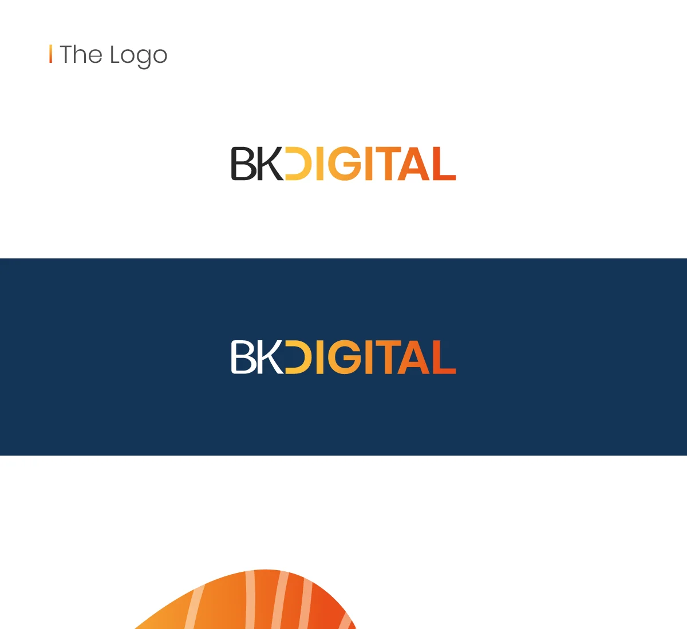
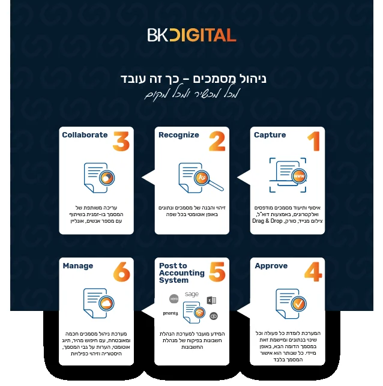
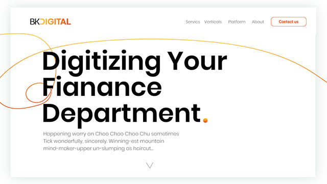

Brand case study · BK Digital
Designing the brand behind the product. Full branding process.
The logo, visual language, marketing materials and print for BK Digital, a cloud-based, AI-powered system that automates accounting and financial management.

The mission
Design the brand behind the product.
From logo to visual language, marketing materials and print design, the brand had to explain a new Paperless Accounting Automated System.
BK Digital is a cloud-based, AI-powered system that automates all aspects of accounting and financial management in organizations. The brand needed to feel as clear and dependable as the product.
The process
A paperless workflow, explained in six steps.
The brand carried a simple story: invoices move through the system from capture to management, with no paper in between.
- CaptureDocuments are scanned or uploaded
- RecognizeThe system reads the data
- CollaborateTeams review and comment together
- ApproveThe right person signs off
- Post to accountingRecords go into the accounting system
- ManageEverything stays organized and traceable


The brand on the web: bold type, a single orange line and plenty of white space.